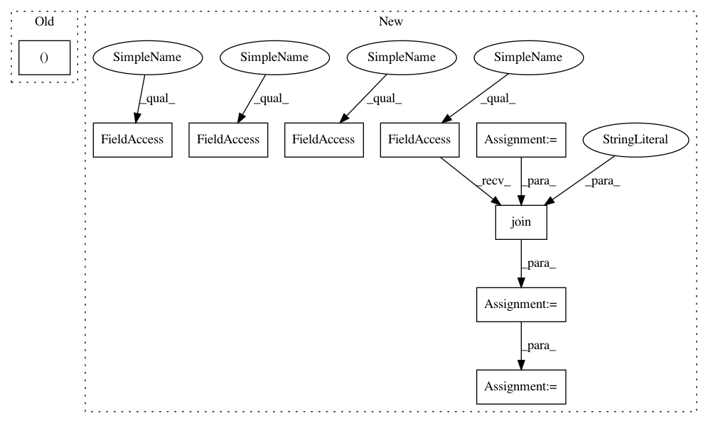

5abfee7d6afc4cac89bdf041470f91570ed6b8e6,chainercv/datasets/cityscapes/cityscapes_semantic_segmentation_dataset.py,CityscapesSemanticSegmentationDataset,__init__,#CityscapesSemanticSegmentationDataset#Any#Any#Any#Any#,36
Before Change
img_dir = os.path.join(img_dir, split)
self.ignore_labels = ignore_labels
self.label_fns, self.img_fns = [], []
resol = os.path.basename(label_dir)
for dname in glob.glob("{}/*".format(label_dir)):
if split in dname:
After Change
ignore_labels=True):
data_root = download.get_dataset_directory(
"pfnet/chainercv/cityscapes")
base_path = os.path.join(data_root, "cityscapes")
if img_dir is None:
img_dir = os.path.join(base_path, "leftImg8bit")
if label_dir is None:
label_dir = os.path.join(base_path, "gtFine")
img_dir = os.path.join(img_dir, split)
self.ignore_labels = ignore_labels
self.label_fnames = list()
self.img_fnames = list()
resol = os.path.basename(label_dir)
for dname in glob.glob(os.path.join(label_dir, "*")):
if split in dname:
for label_fname in glob.glob(
os.path.join(dname, "*", "*_labelIds.png")):
self.label_fnames.append(label_fname)
for label_fname in self.label_fnames:
img_fname = label_fname.replace(resol, "leftImg8bit")
In pattern: SUPERPATTERN
Frequency: 3
Non-data size: 9
Instances
Project Name: chainer/chainercv
Commit Name: 5abfee7d6afc4cac89bdf041470f91570ed6b8e6
Time: 2017-08-16
Author: shunta.saito@gmail.com
File Name: chainercv/datasets/cityscapes/cityscapes_semantic_segmentation_dataset.py
Class Name: CityscapesSemanticSegmentationDataset
Method Name: __init__
Project Name: keras-team/autokeras
Commit Name: 5b8864d1863ac0474db8b657f023341686f4b1fb
Time: 2020-09-24
Author: jhfjhfj1@gmail.com
File Name: benchmark/imdb.py
Class Name:
Method Name: imdb_raw
Project Name: Hironsan/anago
Commit Name: 56ff7de2acb143c2e29640d7639fd356e72547ff
Time: 2017-08-10
Author: light.tree.1.13@gmail.com
File Name: tests/train_test.py
Class Name: TrainTest
Method Name: test_train